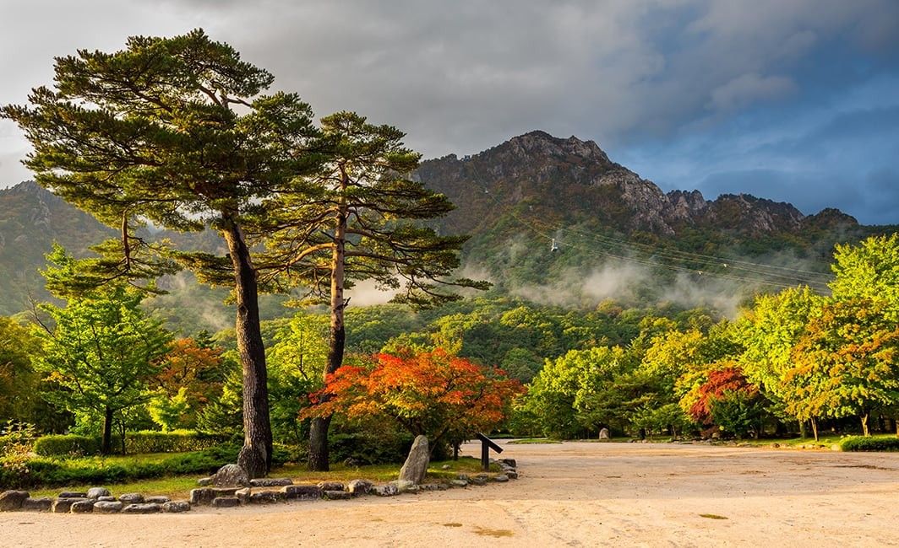
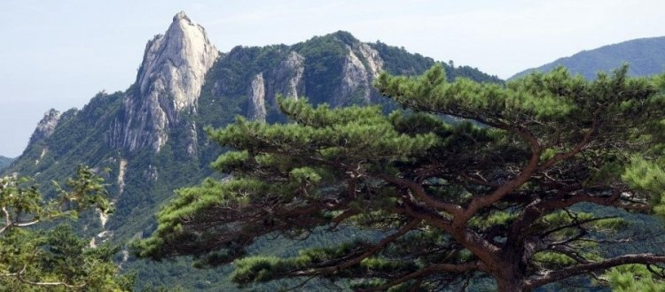
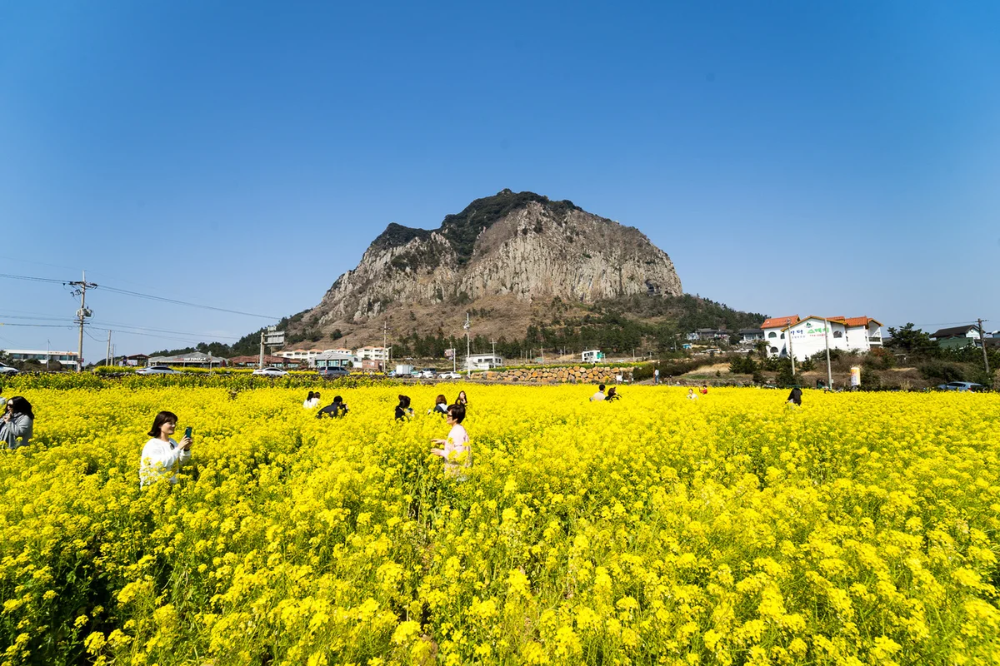

Коре́я — географическая территория (страна), включающая Корейский полуостров и прилегающие острова и объединённая общим культурно-историческим наследием[1]. В прошлом единое государство. На севере имеет сухопутную границу с Китаем и Россией. К востоку от Кореи находятся Японские острова. В 1945 году после поражения Японии во Второй мировой войне территория Кореи, в то время входившей в состав Японии, была разграничена на две зоны военной ответственности: советскую — к северу от параллели 38° с. ш. и американскую — к югу от неё. Впоследствии, в 1948 году, на территории этих зон возникли два государства: Республика Корея (самоназвание — Тэханмингук, то есть Республика Тэхан) на юге и Корейская Народно-Демократическая Республика (самоназвание — Чосон Минджуджуи Инмин Конхвагук, то есть Народная Демократическая Республика Чосон) на севере. Территория Кореи — 220,8 тыс. км². Суммарное население обоих корейских государств превышает 70 млн человек, 98 % населения — корейцы.
1. Природа
Флора и фауна Южной Кореи богата. На видовое разнообразие влияет расположение страны в умеренном климатическом поясе. Весна здесь теплая, лето жаркое, воздух влажный, зима прохладная, преимущественно без осадков. Оказывают влияние и ландшафты, представленные равнинами, горами, а также морским побережьем. Среди растительности имеются леса разных типов, луга и бамбуковые заросли, а с оленями и косулями соседствуют тигры и уссурийские медведи.

Лесов на территории страны много и произрастают они преимущественно в горной местности и предгорных районах. В нижнем поясе в изобилии встречаются широколиственные деревья: каштаны, вишни, грабы, магнолии, дубы, хурма, а также конфетные деревья. Выше них располагаются смешанные массивы, среди которых имеются такие деревья, как пихта, туя, корейский кедр, липа, клен и береза. В горах на высоте от 1000 метров преобладают хвойные породы деревьев, представленные сосной, тисом, тсугой разнолистной, елью и т. д.

В предгорных районах в условиях повышенной влажности можно встретить корейскую сосну и женьшень. Они являются источником ценных пород древесины. На равнинах в прибрежных районах имеются заросли лавровых деревьев и 10-метровых стеблей бамбука.

Равнина страны представлена многочисленными лугами. На них произрастает множество цветочных растений. Главным среди цветов и разнотравья является гибискус. Это символ Южной Кореи, который изображен на гербе и монетах.
В стране имеется корейская сакура, цветущая красиво, как и японская. Встречаются желтый рапс, азалия, бархатные камелии, хризантемы и прочее.
2. Название страны
В настоящее время в Северной Корее принято название Чосон (кор. 조선, 朝鮮), а в Южной — Хангук (한국; 韓國) или Тэханмингук (대한민국; 大韓民國). Выдвигались предложения использовать название Корё (고려; 高麗) для будущей объединённой Кореи. Корё — это название государства на Корейском полуострове, существовавшего в 918—1392 гг. От него происходит европейское название Кореи. Слово Корё также входит в самоназвание этнических корейцев стран бывшего Советского Союза (корё-сарам).
3. История
Впервые человек вступил на Корейский полуостров приблизительно 40 000—25 000 лет назад, в период позднего палеолита. Однако эти древние люди не являлись непосредственными предками современных корейцев. Корейский этнос сложился в результате миграций народов на полуостров — главным образом, с севера. Эти миграции начались в эпоху неолита (шестое — первое тысячелетия до нашей эры) и продолжались до конца первого тысячелетия нашей эры.
Национальная мифология в современной Корее возводит начало корейской истории к 2333 год до н. э., когда, согласно легенде, Тангун, сын божества и медведицы, обратившейся в женщину, основал первое государство Чосон, названное впоследствии Древним Чосоном, чтобы отличать его от более позднего государства Чосон (1392—1910 гг. нашей эры).
Официальная корейская историография также ведёт отсчёт политической истории Кореи от Древнего Чосона, хотя вопросы об этнокультурной принадлежности этого государства, времени формирования его государственности и даже местонахождении вызывают споры (по одной из теорий, оно находилось вне пределов Кореи). В 108 году до нашей эры Древний Чосон был захвачен войсками китайской династии Хань и прекратил своё существование.
В первой половине первого тысячелетия нашей эры в Корее сложились три государства — Силла, Пэкче и Когурё. Во второй половине VII века Силла в союзе с китайской династией Тан разгромило Пэкче и Когурё, а затем после войны с Тан объединило под своим контролем около двух третей Корейского полуострова — территорию к югу от реки Тэдонган. Так сложилось государство Объединённое Силла.
Официальная корейская историография включает в историю Кореи и государство Пархэ, существовавшее в 698—926 гг. нашей эры и занимавшее часть территории Корейского полуострова, современного российского Приморья и Маньчжурии.
В конце X века после распада Объединённого Силла образовалось государство Корё, границы которого практически совпадали с границами нынешней Кореи. В 1392 году на смену Корё пришло государство Чосон.
В XVI—XIX веках Корея проводила политику самоизоляции.
После русско-японской войны 1904—05 гг. Япония установила протекторат над Кореей, а в 1910 году присоединила её. С 1910 по 1945 годы Корея входила в состав Японской Империи. После поражения Японии во Второй мировой войне освобождённая Корея была поделена, северная часть Кореи была в зоне военной ответственности Советского Союза, а южная — Соединённых Штатов.
В 1948 году были созданы два государства — Республика Корея на юге и КНДР на севере. Корейская война 1950—1953 гг. закрепила раскол страны.
4. Религия
Верующие, в основном, — христиане (протестанты) и буддисты.